Selecting open LLMs for research with openllm-selector
Most LLM comparison tools ask “which model scores highest on MMLU?” That is not a useful question for research. What matters is: can I reproduce this model’s training? Is the license compatible with my institution’s data sharing agreement? Does it support the languages in my corpus? Will it fit on the GPUs I have access to?
openllm-selector is a curated database of 33 open LLMs with a queryable Python API and an interactive Streamlit app. Every record tracks the characteristics that actually drive research decisions — weights availability, training data transparency, intermediate checkpoints for training-dynamics studies, license, number of supported languages, training token count, and whether an instruct variant exists — rather than benchmark leaderboard positions. Languages reflect officially supported languages as documented by the model creators, not partial or limited capabilities (e.g. Falcon supports German, Spanish and French officially, but has only limited capabilities in several other languages which are not included).
An optional notes field is present for models that require additional context, such as post-trained models where training_tokens_b is null for structural reasons rather than lack of disclosure (e.g. DeepSeek-R1 is post-trained on DeepSeek-V3-Base, so a pre-training token count is not applicable).
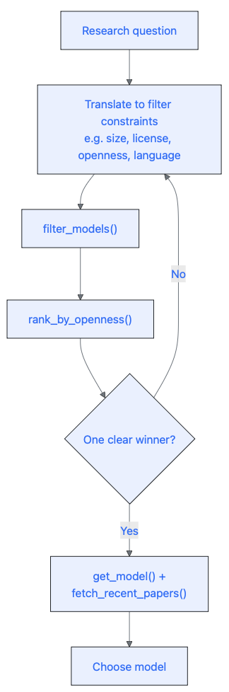
Installation
pip install git+https://github.com/Programming-The-Next-Step-2026/openllm-selector.git@week-3To run the interactive app locally:
streamlit run app/app.pyUsing the app
The app has three panels: a filter sidebar on the left, a scatter plot and results grid in the main area, and a model profile card that opens below when you click any row or bubble.
Scatter plot
The default view plots training tokens (B) on the x-axis against context window on the y-axis. You can switch either axis to: context window, release year, training tokens, or number of languages. Bubble colour encodes openness score (1–5, Viridis scale) and bubble area encodes model size in billions of parameters, capped at 100 B. Clicking a bubble opens the profile card for that model.
Results grid
The grid shows the filtered models ranked by openness score by default and displays: model name, openness score, size (B), context window, training tokens (B), release year, architecture, and license. Clicking any column header re-sorts the results by that column in ascending or descending order. Clicking a row opens the profile card.
Profile card
The profile card shows family, architecture, license, supported languages, and links to the foundational paper and HuggingFace page on the left, and size, context window, training tokens, and instruct version availability on the right. Below the main details: the five openness badges (open weights, open training data, intermediate checkpoints, open code, permissive license) with an overall openness score, followed by an expandable Recent arXiv papers section that fetches the three most recent papers mentioning the model from arXiv.
The five scenarios below walk through how a researcher would use the app.
Scenario a — Training dynamics researcher
You are studying how in-context learning ability develops over the course of training. You need a model that released intermediate checkpoints, is small enough to run on a single GPU, and is as openly licensed as possible.
In the sidebar:
- Under Openness filters → check Intermediate checkpoints
- Under Ranges, drag the Size (B parameters) slider to a maximum of 11 B
The grid immediately narrows to five models: Apertus 8B, GPT-J 6B, OLMo 7B, OLMo 2 7B, and Pythia 6.9B — all with an openness score of 5. Click OLMo 2 7B to open its profile card, which shows the foundational paper link and fetches the three most recent arXiv papers mentioning the model. If your GPU budget extends to 32 B, also remove the size cap — OLMo 2 32B and OLMo 3 32B pass every other criterion, and OLMo 3 32B also has a think variant available.
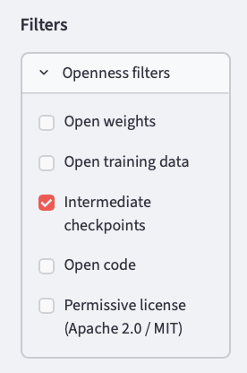
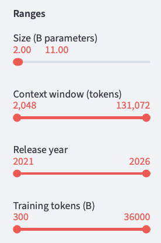
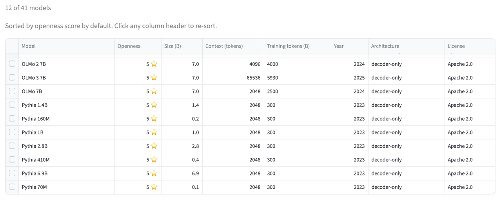
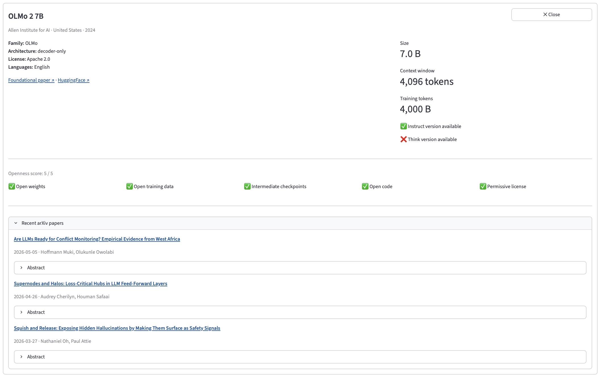
Scenario b — European privacy-conscious researcher
Your institution requires that training data not originate from US or Chinese organisations, to avoid jurisdictional complications with GDPR and data residency rules.
In the sidebar:
- Open Exclusion filters → Exclude country of origin → select United States and China
Eight models remain: Apertus 8B (Switzerland, score 5), BLOOM 176B and the three Mistral models (France), the two Falcon models (United Arab Emirates), and Sarvam 30B (India, score 2). The scatter plot makes the trade-offs immediately visible: Apertus 8B leads on openness; BLOOM covers 46 languages but carries a BigScience RAIL license with restrictions on certain uses; the two Falcon models cover 4 languages each but are Apache 2.0 licensed.
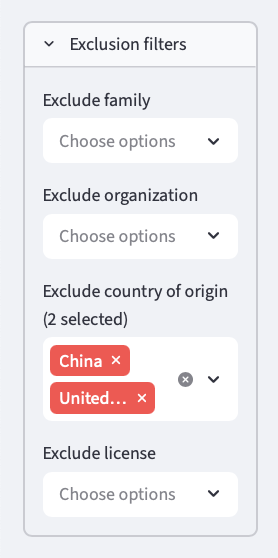
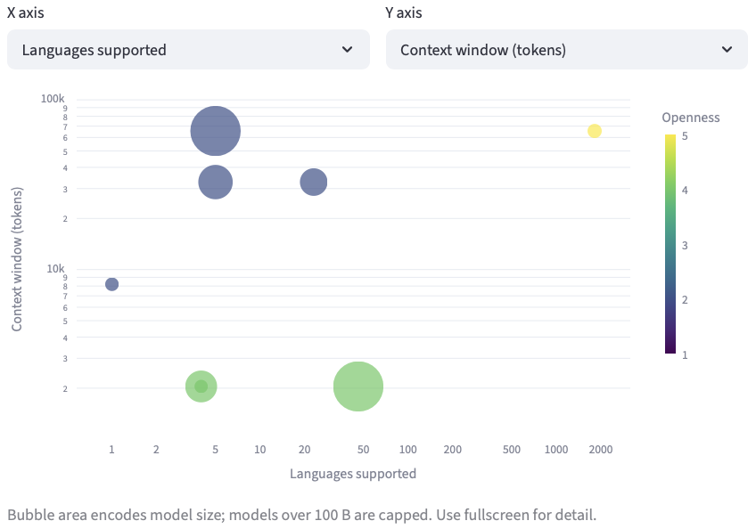
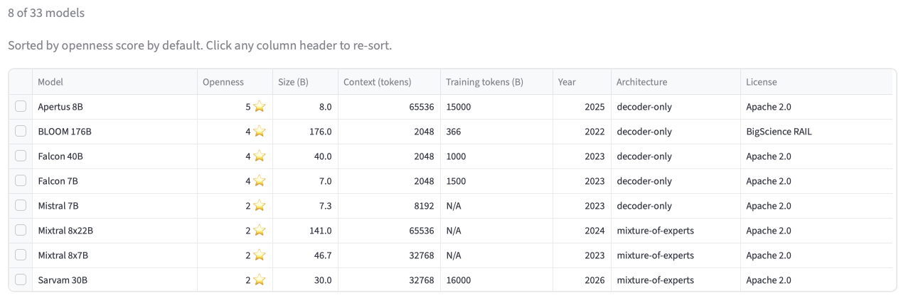
Scenario c — Multilingual NLP researcher
You are building a cross-lingual transfer benchmark and need a base model trained on multiple languages, with a license that allows redistributing fine-tuned derivatives.
In the sidebar:
- Under Openness filters → check Open weights and Open training data
- Check the Multilingual checkbox
Four models match: Apertus 8B (1,811 languages, Apache 2.0, score 5), BLOOM 176B (46 languages, BigScience RAIL license, score 4), Falcon 7B, and Falcon 40B (4 languages each, Apache 2.0, score 4). Use the Language (official support only) dropdown to check whether a specific language you need is present. Selecting Hindi narrows the set to Apertus 8B, BLOOM 176B, Gemma 3 27B, Llama 3.1 8B, Qwen3 8B, and Sarvam 30B. Selecting Japanese returns Apertus 8B, Gemma 3 27B, Qwen2.5 7B, and Qwen3 8B. The license column in the grid makes the trade-off immediately visible.
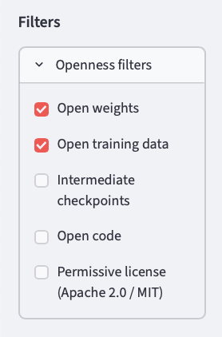
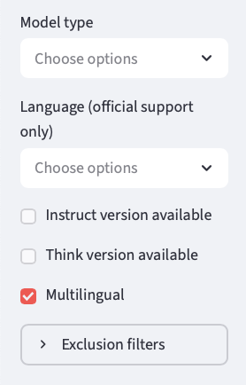
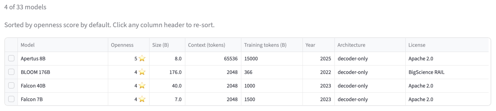
Scenario d — Compute-limited researcher
You have access to a single A100 (80 GB) but need a long context window for document-level tasks. You want the largest model that still fits comfortably, with at least 8 K tokens of context.
In the sidebar:
- Drag the Size (B parameters) slider to a maximum of 8 B
- Move the Context window (tokens) slider minimum to 8,192
Six models appear. On the scatter plot with context window on the y-axis, three models stand out at 131 K context — Qwen2 7B, Qwen2.5 7B, and Llama 3.1 8B — an order of magnitude larger than Mistral 7B, Gemma 2B, and the newly added Apertus 8B (65,536 tokens). Click each model to compare licenses and training details in the profile card before deciding.
** [Screenshot: size capped at 8 B, context window minimum at 8,192; scatter plot with Qwen2 7B, Qwen2.5 7B, and Llama 3.1 8B clearly separated from Apertus 8B, Mistral 7B, and Gemma 2B] **
Scenario e — Fully open science researcher
You are writing a methods paper and want every step of your pipeline to be replicable: the model weights, the training data, the intermediate checkpoints, and the code all need to be publicly available under a permissive license.
In the sidebar:
- Open Openness filters → check Open weights, Open training data, Intermediate checkpoints, Open code, and Permissive license
Seven models score 5: Apertus 8B, GPT-J 6B, OLMo 7B, OLMo 2 7B, OLMo 2 32B, OLMo 3 32B, and Pythia 6.9B. Click OLMo 3 32B to open its profile card — it is the only fully open model in the database that also has a chain-of-thought (think) variant available. To narrow to that model alone, also check the Think version available checkbox. Expand Recent arXiv papers to see the latest citations — useful for a quick literature check before committing to a model.
[Screenshot: all five openness checkboxes checked; seven results in the grid; OLMo 3 32B profile card open showing Recent arXiv papers expander]
Using the Python API
The same five questions answered in code. All functions are importable directly from openllm_selector.
import openllm_selector as oScenario a — Training dynamics researcher
candidates = o.filter_models(intermediate_checkpoints=True, max_size_b=10)
ranked = o.rank_by_openness(candidates)
for m in ranked:
print(m["name"], f"({m['size_b']} B, score {m['openness_score']}, {m['training_tokens_b']:.0f} B tokens)")
#> Apertus 8B (8.0 B, score 5, 15000 B tokens)
#> GPT-J 6B (6.0 B, score 5, 402 B tokens)
#> OLMo 2 7B (7.0 B, score 5, 4000 B tokens)
#> OLMo 7B (7.0 B, score 5, 2500 B tokens)
#> Pythia 6.9B (6.9 B, score 5, 300 B tokens)All five score 5 — the maximum — so openness alone does not break the tie. The deciding factor here is training scale: Apertus 8B leads with 15,000 B tokens; OLMo 2 7B was trained on 13× more tokens than Pythia and has a 4 K context window versus Pythia’s 2 K. Pythia is the go-to if your study needs a fixed community benchmark with established checkpoints at precise token intervals. Remove the size cap to also consider OLMo 2 32B and OLMo 3 32B — both score 5, and OLMo 3 32B is the only fully open model with a think variant.
# Look up the foundational paper and confirm checkpoint availability
model = o.get_model("OLMo 2 7B")
print(model["foundational_paper"])
#> https://arxiv.org/abs/2501.00656
print(model["intermediate_checkpoints"])
#> TrueScenario b — European privacy-conscious researcher
To exclude multiple countries, filter the result list directly — filter_models() takes one exclude_country_of_origin value at a time:
excluded_countries = {"United States", "China"}
results = [m for m in o.filter_models() if m["country_of_origin"] not in excluded_countries]
ranked = o.rank_by_openness(results)
for m in ranked:
print(m["name"], f"— {m['country_of_origin']} (score {m['openness_score']})")
#> Apertus 8B — Switzerland (score 5)
#> BLOOM 176B — France (score 4)
#> Falcon 40B — United Arab Emirates (score 4)
#> Falcon 7B — United Arab Emirates (score 4)
#> Mistral 7B — France (score 2)
#> Mixtral 8x22B — France (score 2)
#> Mixtral 8x7B — France (score 2)
#> Sarvam 30B — India (score 2)Eight models remain. Apertus 8B (Switzerland) scores 5 — the only fully open model outside the US and China. BLOOM and the two Falcons score 4. The three Mistral models and Sarvam 30B score 2 — their training data composition is not publicly disclosed. For most European research use cases, Falcon 7B or Apertus 8B is the pragmatic choice: both are Apache-licensed and trained on documented multilingual corpora.
Scenario c — Multilingual NLP researcher
results = o.filter_models(multilingual=True, min_openness=3)
ranked = o.rank_by_openness(results)
for m in ranked:
print(
m["name"],
f" {m['num_languages']} languages"
f" license: {m['license']}"
f" score: {m['openness_score']}"
)
#> Apertus 8B 1811 languages license: Apache 2.0 score: 5
#> BLOOM 176B 46 languages license: BigScience RAIL score: 4
#> Falcon 40B 4 languages license: Apache 2.0 score: 4
#> Falcon 7B 4 languages license: Apache 2.0 score: 4Apertus 8B leads with 1,811 languages and a score of 5 — the broadest language coverage of any Apache-licensed model in the database. BLOOM covers 46 languages but its BigScience RAIL license restricts certain commercial and potentially harmful uses. If your benchmark is purely academic and you need broad language coverage, BLOOM is a strong option. If you need to redistribute fine-tuned derivatives without restriction, Apertus 8B or Falcon 7B with Apache 2.0 is the safer choice.
Use filter_models(language=...) to check whether a specific language you need is officially supported:
hindi_models = o.filter_models(language="Hindi")
for m in hindi_models:
print(m["name"], "—", m["languages"])
#> Apertus 8B — ['Albanian', 'Arabic', ..., 'Hindi', ..., 'Yoruba']
#> BLOOM 176B — ['Akkadian', 'Arabic', ..., 'Hindi', ..., 'Yoruba']
#> Gemma 3 27B — ['Afrikaans', 'Arabic', ..., 'Hindi', ..., 'Vietnamese']
#> Llama 3.1 8B — ['English', 'German', 'French', 'Italian', 'Portuguese', 'Hindi', 'Spanish', 'Thai']
#> Qwen3 8B — ['Afrikaans', 'Albanian', ..., 'Hindi', ..., 'Waray']
#> Sarvam 30B — ['Assamese', 'Bengali', ..., 'Hindi', ..., 'Urdu']# Inspect the full language list for BLOOM
bloom = o.get_model("BLOOM 176B")
print(bloom["num_languages"]) # 46
print(bloom["huggingface_id"]) # bigscience/bloom
print(bloom["languages"][:5]) # first five of 46
#> ['Akkadian', 'Arabic', 'Assamese', 'Bambara', 'Basque']
# Browse all languages present in the database
all_langs = o.get_languages()
print(len(all_langs), "unique languages")
#> 111 unique languages
# Filter by a single language — Japanese is supported by Apertus 8B, Gemma 3 27B, Qwen2.5 7B, and Qwen3 8B
japanese_models = o.filter_models(language="Japanese")
for m in japanese_models:
print(m["name"])
#> Apertus 8B
#> Gemma 3 27B
#> Qwen2.5 7B
#> Qwen3 8BScenario d — Compute-limited researcher
results = o.filter_models(max_size_b=8, min_context_window=8192)
ranked = o.rank_by_openness(results)
for m in ranked:
print(
m["name"],
f" {m['size_b']} B"
f" context: {m['context_window']:,} tokens"
f" license: {m['license']}"
)
#> Apertus 8B 8.0 B context: 65,536 tokens license: Apache 2.0
#> Mistral 7B 7.3 B context: 8,192 tokens license: Apache 2.0
#> Qwen2 7B 7.6 B context: 131,072 tokens license: Apache 2.0
#> Qwen2.5 7B 7.6 B context: 131,072 tokens license: Apache 2.0
#> Gemma 2B 2.0 B context: 8,192 tokens license: Gemma Terms of Use
#> Llama 3.1 8B 8.0 B context: 131,072 tokens license: Llama 3 Community LicenseSix models pass the filter. Qwen2 7B, Qwen2.5 7B, and Llama 3.1 8B offer 131 K context windows — suitable for full-document processing. Apertus 8B adds 65,536 tokens of context with an Apache 2.0 license and score 5. Both Qwen models use Apache 2.0; Llama 3.1 carries Meta’s community license, which restricts use beyond 700 M monthly users. For typical research use, any of the three long-context Apache options works. Qwen2.5 7B is the strongest on training scale and language coverage. If your documents are consistently under 10 K tokens, Mistral 7B is a leaner alternative.
# Compare training scale and language coverage across the three long-context options
for name in ["Qwen2 7B", "Qwen2.5 7B", "Llama 3.1 8B"]:
m = o.get_model(name)
print(f"{name}: {m['training_tokens_b']:.0f} B tokens, {m['num_languages']} languages")
#> Qwen2 7B: 7000 B tokens, 27 languages
#> Qwen2.5 7B: 18000 B tokens, 29 languages
#> Llama 3.1 8B: 15000 B tokens, 8 languagesQwen2.5 7B was trained on 2.6× more tokens than Qwen2 7B and supports 29 languages — the largest training budget among Apache 2.0 options in this size range.
Scenario e — Fully open science researcher
fully_open = o.filter_models(min_openness=5)
ranked = o.rank_by_openness(fully_open)
for m in ranked:
print(
m["name"],
f" {m['size_b']} B"
f" tokens={m['training_tokens_b']:.0f} B"
f" think={m['has_think_version']}"
)
#> Apertus 8B 8.0 B tokens=15000 B think=False
#> GPT-J 6B 6.0 B tokens=402 B think=False
#> OLMo 2 32B 32.0 B tokens=6000 B think=False
#> OLMo 2 7B 7.0 B tokens=4000 B think=False
#> OLMo 3 32B 32.0 B tokens=5500 B think=True
#> OLMo 7B 7.0 B tokens=2500 B think=False
#> Pythia 6.9B 6.9 B tokens=300 B think=FalseAll seven score 5: weights, training data, intermediate checkpoints, training code, and a permissive Apache 2.0 license. For a methods paper, any of the five allows a reader to fully reproduce your pipeline from scratch. OLMo 3 32B is the standout choice if your study benefits from structured reasoning — it is the only fully open model in the database with a think variant.
# Narrow to fully open models with a think variant
think_open = o.filter_models(min_openness=5, has_think_version=True)
for m in think_open:
print(m["name"])
#> OLMo 3 32BCheck recent literature before committing — searching for “OLMo” covers all four OLMo variants:
# Results are based on arXiv keyword matching — may include tangentially related
# papers, especially for common or short model names (e.g. "Phi", "Gemma").
papers = o.fetch_recent_papers("OLMo", max_results=3)
for p in papers:
print(p["published"][:10], "—", p["title"])
print(" ", p["arxiv_url"])
# Output varies; typical result:
#> 2025-01-14 — OLMo 2: Smarter Training for Open Language Models
#> https://arxiv.org/abs/2501.00656
#> 2024-09-18 — Scaling LLM Test-Time Compute with OLMo ...
#> https://arxiv.org/abs/...Within a few lines you have the full openness profile, the foundational reference, and the most recent papers building on the model — enough to make a defensible choice and start your literature review.